iHEAR2++
iHear2++ was a two-semester capstone project for Deng Audio Research, a client developing tools to screen hearing health outside of a clinical audiology setting. A five-person team was asked to build a low-cost, portable device that measures how sound reflects inside the ear canal, a signal that can help flag hearing issues without a full clinical exam.
A calibrated sweep from 20 Hz to 20 kHz plays down an acoustic tube pressed against the ear. Five PDM MEMS microphones, spaced along the tube at positions set by the client's acoustic model, each record the reflected sound. A control PCB built around an STM32H723VGT6 reads all five channels in parallel and streams them over high-speed USB to a PC, where software converts the PDM streams to PCM, averages repeated takes, and computes the ear-canal reflectance.
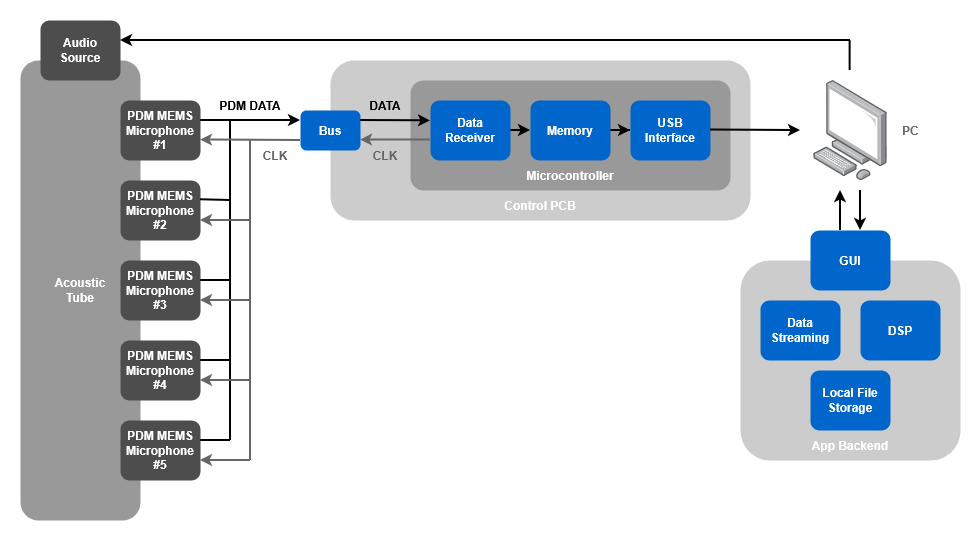
The hard part was never a single block. Five synchronized, high-rate digital streams had to reach the PC without dropping samples, the microphones had to sit at exact positions, and clock and data signals had to travel down cables without corrupting each other. Most of the project's decisions came down to protecting signal quality from the microphone to the USB port.
The work spanned the whole stack, from board layout and cabling to firmware, filters, the GUI, and the 3D-printed tube. This page focuses on the three pieces of hardware that carried the most risk: the 4-layer control PCB, the 2-layer microphone PCBs, and the cabling that connects them.
Three architectures were compared before any parts were chosen: an FPGA-only design, a microcontroller-only design, and a hybrid of the two. The FPGA-only option was ruled out because FPGAs have no native USB device support, which would have meant building or licensing a high-speed USB core. The hybrid looked appealing for high-speed acquisition, but no signal processing needed to happen on the device, so the FPGA's strengths would have gone unused. A microcontroller alone could handle both acquisition and communication, so that is the design that moved forward.
PDM is a clock and a single data line, which looks a lot like SPI. That observation shaped the whole design: five SPI peripherals in slave receive-only mode capture the five microphones directly, each fed by a 3.072 MHz clock that gives 64x oversampling for decimation to 48 kHz. The STM32H723VGT6 was selected over the STM32F723ZET6 for its higher clock speed, larger memory, and lower unit cost ($5.86 versus $10.89). The trade-off was that it needs an external ULPI transceiver for USB high-speed, a complexity that was judged manageable and that shaped much of the control PCB.
The control PCB is the hub of the system. It supplies clean power and clocks to five microphones, captures their data on five parallel channels, and moves everything to the PC over USB. Because the channels have to be captured in lockstep, layout decisions mattered as much as component choices.
Schematic design
The schematic is organized into six blocks: microcontroller, USB interface, power, LED indicators, clock network, and microphone interface. A 24 MHz active oscillator provides the clock for both the STM32 and the USB3300 ULPI transceiver, chosen over a passive crystal for reliable startup without fine tuning. An FSUSB42UMX switch lets the same USB-C port carry high-speed data during operation and full-speed traffic for programming, and a simple reset and boot circuit allows the bootloader to be entered with a single button press.
Power comes from two 3.3 V regulators fed by 5 V USB. An LDL1117 supplies the microcontroller and digital peripherals, while a separate LP5907 with under 6.5 µVrms of output noise powers the oscillator, microphones, and clock buffer. Keeping those rails apart stops digital switching noise from showing up as clock jitter or as noise in the recordings.
The microphone clock is generated by the STM32's PLL and distributed by a CDCLVC1110 1:10 clock buffer with less than 50 ps of pin-to-pin skew, which is critical for synchronized capture. Each microphone connects through its own USB-C receptacle carrying clock, data, power, and ground, protected by low-capacitance TVS diode arrays (0.85 pF) that guard against ESD without loading the high-speed signals.
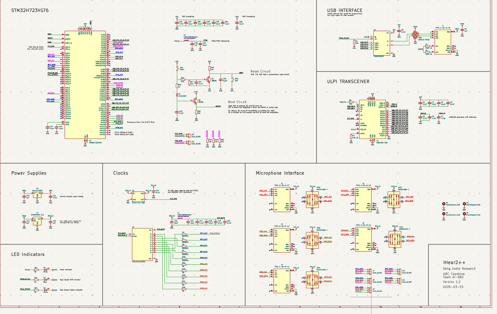
A stackup where every layer has a job
The board uses a 4-layer JLC04161H-7628 stackup, which kept cost low while allowing practical trace widths for the impedance-controlled high-speed lines. Each layer was given a single purpose so that sensitive signals stay separated from each other.
Data and clock were placed on different layers so they are physically separated, which reduces coupling between the two. The solid ground plane on layer 2 gives return currents a short, low-inductance path directly beneath the traces, keeping loop area and noise down and giving the decoupling capacitors a stable reference.
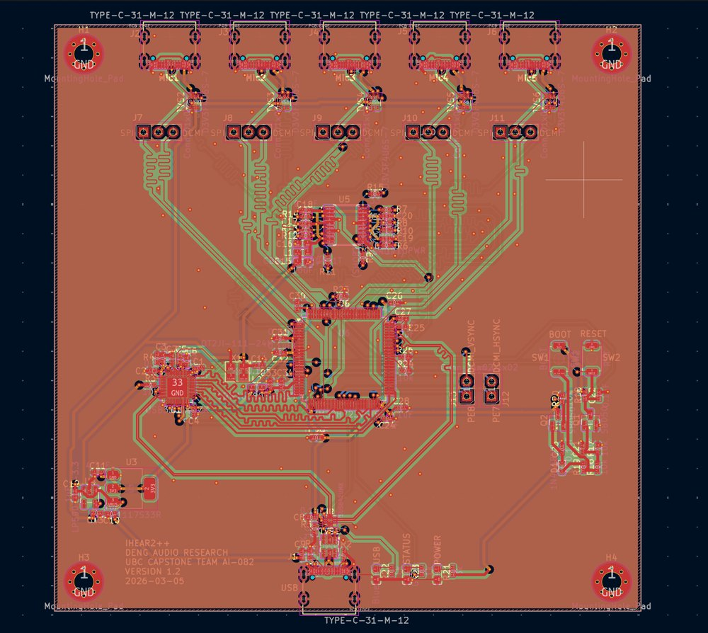
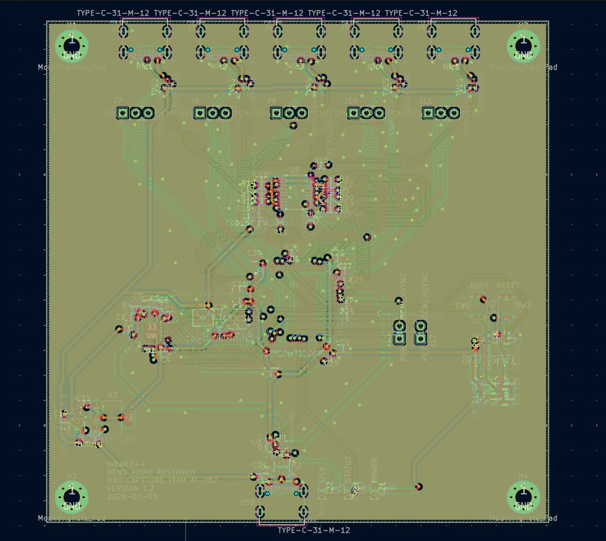
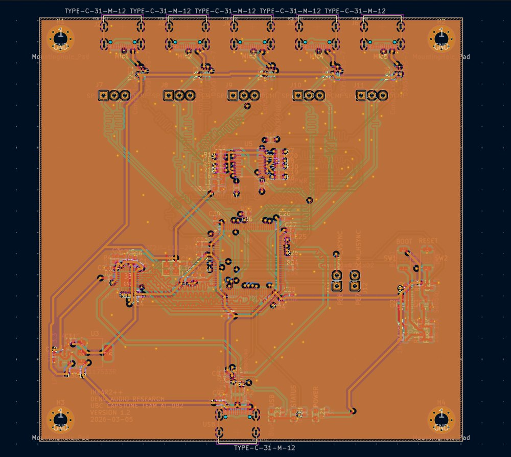
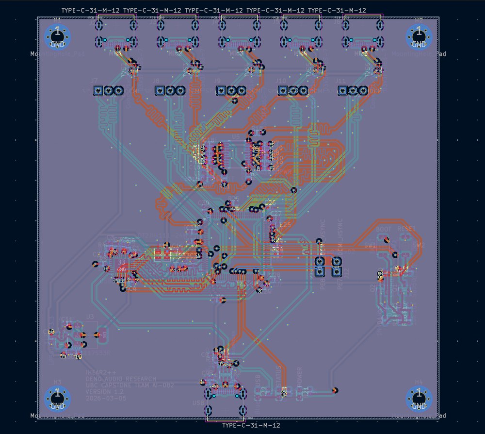
Routing for timing
Synchronization is the whole point of the array, so every clock and data line between the microphone connectors and the STM32 was length matched. The clock buffer sits as close to the microcontroller as possible so the incoming clock trace stays short, and bypass capacitors were placed directly at the power pins of each IC.
The ULPI transceiver was placed next to the STM32 and the oscillator, with its data lines length matched, kept on a single reference plane, and routed with minimal vias. The high-speed USB pair was routed differentially to a 90 Ω target, using a 0.22 mm trace width and 0.15 mm spacing from the manufacturer's impedance calculator. Ground pours on every layer and stitching vias near high-speed lines help keep EMI and inductance low, and the regulator was placed away from fast-switching and sensitive lines.
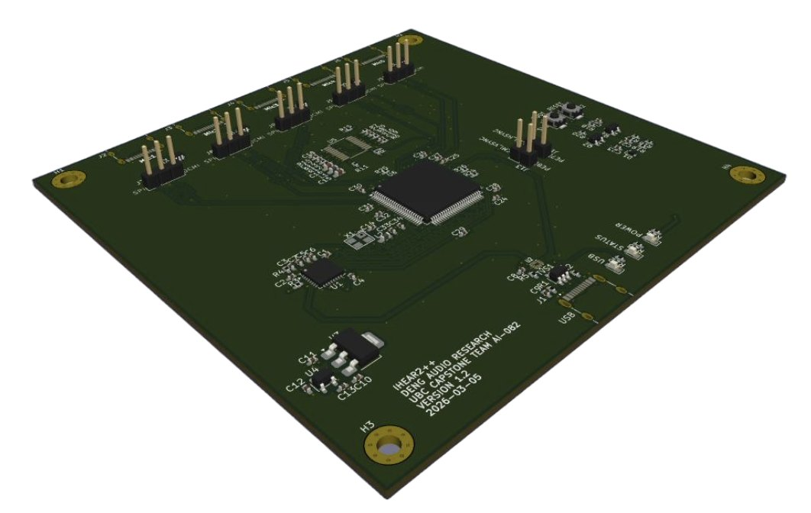
Room to grow
Jumper headers let each microphone data line be routed to either an SPI or a DCMI interface on the STM32. The client suggested that DCMI, which clocks every input from a single source, could eliminate the clock skew risk that comes with five separate SPI clocks. The board keeps both paths open, with all of those traces length matched to the same 73 mm, so that idea can be explored without another board spin.
Each of the five microphones sits on its own small, identical 2-layer board. An earlier iteration placed all five on one larger board, but splitting them into separate modules means a damaged microphone can be swapped out cheaply instead of scrapping the entire array.
Choosing the microphone
The array needed top-port, PDM-output microphones covering 20 Hz to 20 kHz, running from the same 3.3 V rail as the microcontroller, at a price that holds up across five units. Five candidates were compared on cost, sensitivity, signal-to-noise ratio, and supply range. The SPK0641HT4H-1 met every hard requirement at the lowest cost of the group, with a 64.5 dB signal-to-noise ratio.
Supporting circuitry
Each board carries a 0.1 µF bypass capacitor and a compact 2x2 header. The capacitor is C0G/NP0 on purpose: Class II ceramic dielectrics can be piezoelectric and inject microphonic noise into the signal path. Tying every microphone's select pin to power keeps them all on the same clock edge and reduces the connection to four lines: clock, data, power, and ground.
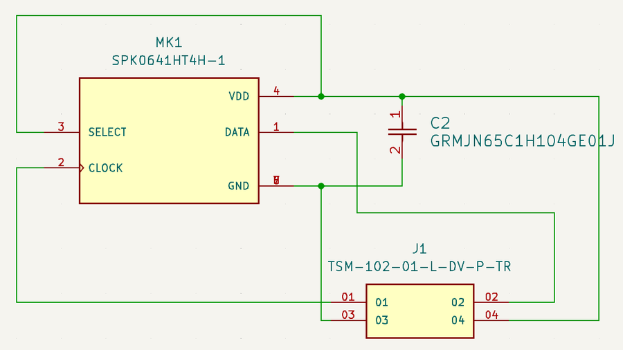
Fitting into 7 mm
The client's acoustic model requires the microphones to sit just 7 mm apart, which made board area the binding constraint. The bypass capacitor and connector were moved to the back of the board, opposite the microphone, with vias placed directly in component pads wherever possible. The microphone is offset toward one side of the board, so alternating boards can be mirrored to meet the spacing. The finished board measures 11.265 mm by 5.6 mm.
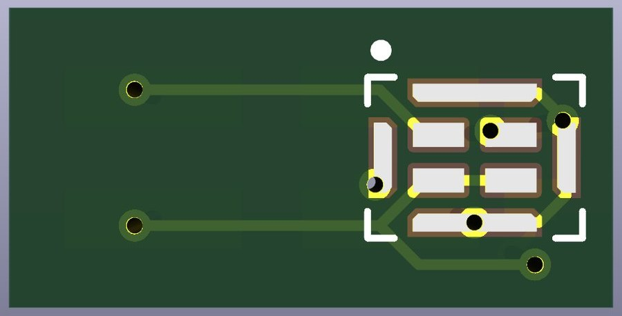
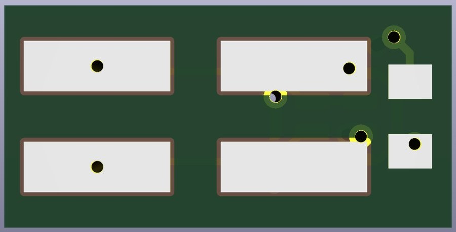
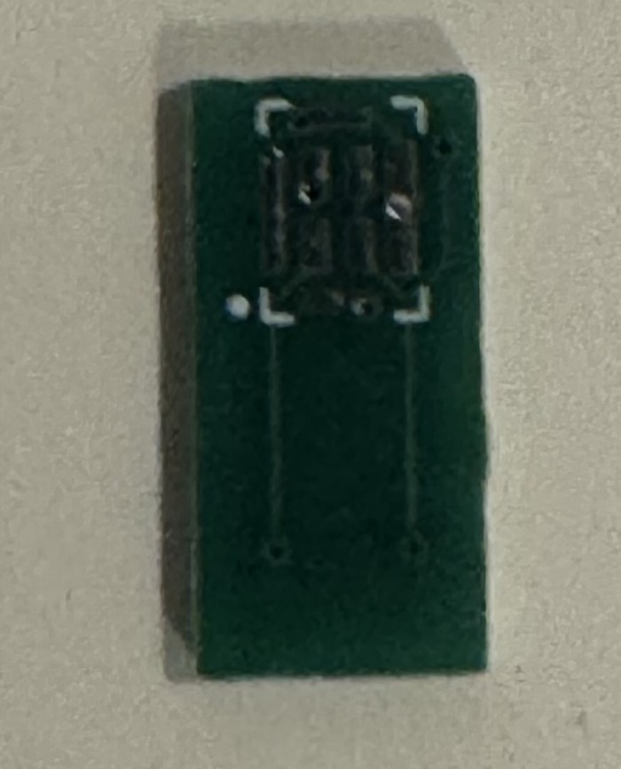
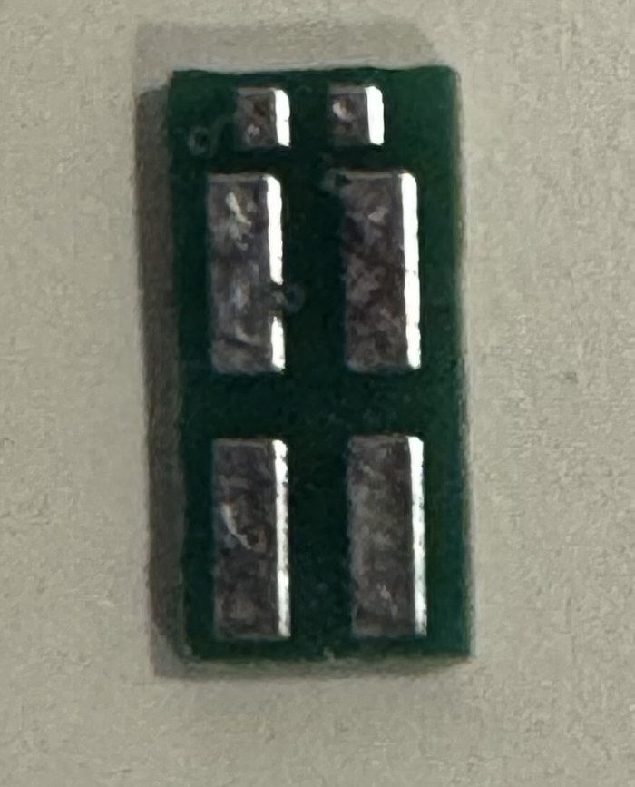
The cables between the control PCB and the microphones turned out to be one of the most important parts of the design. Each one carries a 3 MHz clock out to the microphone and a PDM data stream back, side by side, over roughly 50 cm.
Cable construction
Each microphone connects through a shielded USB-C to pigtail cable (DH-20UE0063-NH). The USB-C plug mates with the control PCB, and the pigtail end connects to the microphone board. Wires follow a fixed scheme: red for power, yellow for ground, green (D+) for the clock going out, and white (D-) for the data coming back. The unused configuration channel wire is tied to ground.
The crosstalk problem
The first version used unshielded cable, and testing showed a real problem. To measure it, a signal generator drove a 3 MHz, 3.3 Vpp square wave onto the clock wire while an oscilloscope watched the data wire. The acceptable limits came straight from the microcontroller's datasheet: inputs are guaranteed low below 0.99 V (0.3 x VDD) and guaranteed high above 2.31 V (0.7 x VDD), and anything in between can be misread.
With unshielded cable, about 1 V of the clock coupled onto the data line, right at the edge of the undefined region and enough to corrupt bits. Switching to shielded cable brought that down to about 200 mV, comfortably clear of both thresholds.
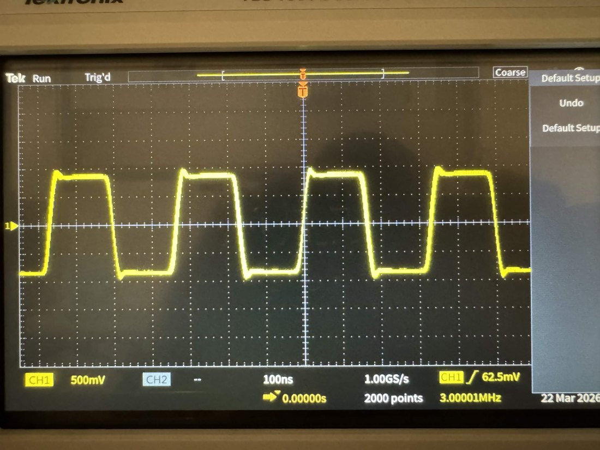
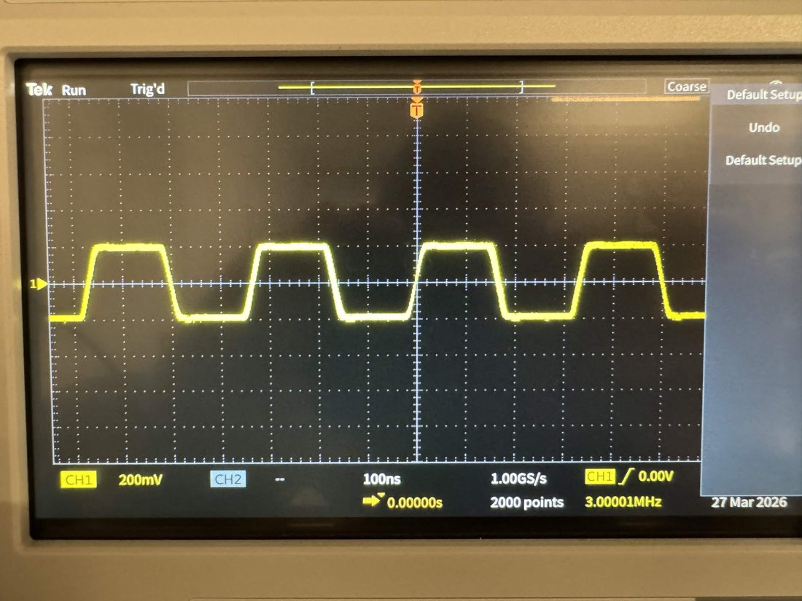
Data-line crosstalk measured at the microphone end of the cable. Note the different vertical scales.
Termination and thermal protection
Two axial resistors finish the job. A 33 Ω series resistor on the data line matches the microphone's output impedance to the cable and suppresses reflections, while a 10 Ω resistor on the power line damps high-frequency ripple picked up along the cable before it can reach the microphone. Both resistors and the open wires are soldered to a 4-position PCB receptacle instead of the board itself, so the heat from hand-soldering never reaches the pads of the heat-sensitive MEMS microphone.
The setup has a known trade-off. Terminating closer to the microphone pad would improve signal clarity, but that means a larger microphone board, and a smaller board is better for the measurement. It is noted as an area for future improvement.
Mechanical. The acoustic tube was modeled in SolidWorks and 3D printed to the client's curvature and microphone-position specification, with microphones at 40, 47, 100, 163, and 170 mm. Each position has a PCB pocket, a seating pocket, and a through-hole into the acoustic cavity. Two standoffs of different heights clamp each board in place to account for the parts on its back, and Teflon tape fills the tolerance gap to damp vibration. A sheet metal aluminum chassis protects the control PCB and helps with EMI.
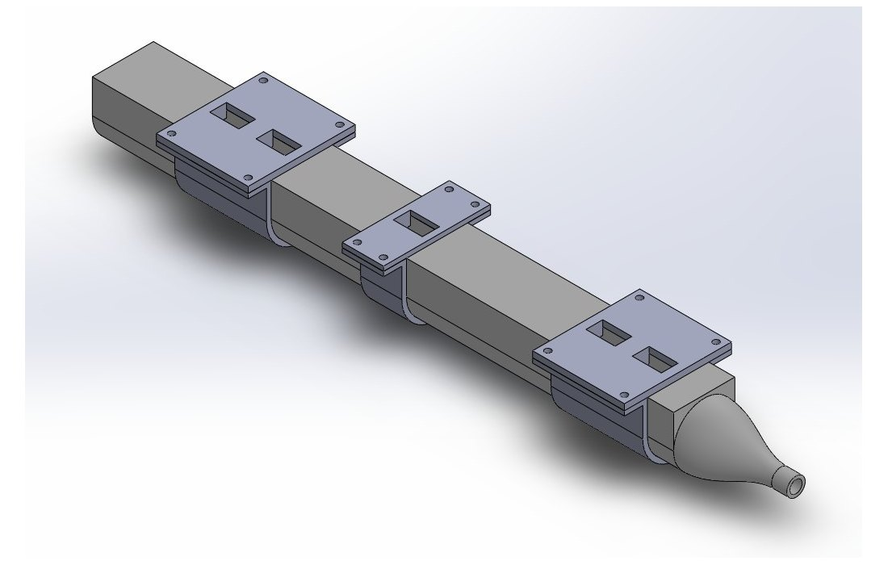
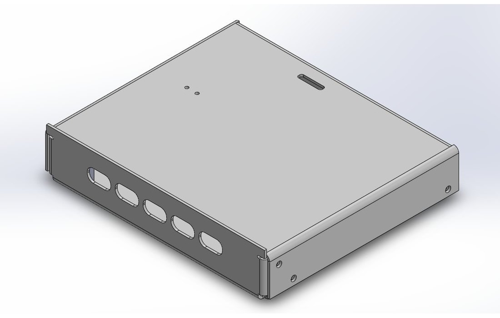
Firmware. Each SPI channel has its own circular DMA buffer, with half-transfer and full-transfer interrupts feeding a job queue so no data is overwritten. Every packet carries a header, a channel number, a 16-bit sequence number to detect drops, and a CRC32 checksum, and an eight-buffer scheme keeps the USB stream flowing through fluctuations in CPU load.
Software. On the PC, a three-stage filter chain (CIC, compensation FIR, and DC blocking) converts PDM to PCM. A Python GUI controls acquisition, aligns repeated takes with cross-correlation, averages them, and plots the waveforms. The reflectance is then computed from an FFT of the five signals and a pseudo-inverse solution for the incident and reflected waves.
Testing separated two questions: verification asks whether the system was built correctly against its requirements, and validation asks whether it performs well enough to be useful. The cable crosstalk test above is one example of verification against a threshold derived from a datasheet.
The PDM-to-PCM pipeline was sanity checked with synthetic data (all ones, all zeros, and random bits), and multi-acquisition averaging was tested by comparing noise in the pre-roll before the chirp. A five-take run reduced noise by 6.01 dB against a theoretical 6.99 dB. A three-take run came in well above its theoretical 4.77 dB, a reminder that real results depend on the noise in the measurement window and environment as well as on the averaging itself.
Not every result passed cleanly. The reflectance magnitude must stay below 1 across the full spectrum, and one validation run produced a plot slightly above 1 at some frequencies, so it was marked as incorrect. The DSP algorithms and filters were sent to Deng Audio Research and confirmed to be working. The client's reference reflectance datasets are proprietary, so the loop could not be fully closed within the project timeline. Reporting that honestly gives the next phase a clear place to start.
iHear2++ was a reminder that the small details decide whether a system works. One unshielded cable could undo an otherwise sound design, and a 33 Ω resistor turned out to matter as much as a 550 MHz microcontroller. Careful choices about layers, cables, and components are what let the clever parts of the system do their job.
Working across the whole stack was the most rewarding part. A layout decision changed what the firmware could rely on, a cable choice changed what the software could trust, and a tube dimension changed what the microphone board could look like. Staying in constant conversation with the teammates who owned the neighboring pieces was as much a part of the engineering as any schematic.
The project also built a habit of measuring before and after. The shielding fix was not a hunch: the limits came from the datasheet, the problem was reproduced on an oscilloscope, and the fix was confirmed on the same setup. Just as important was learning that a test that does not pass is still useful, as long as it is reported clearly.
Finally, it was a lesson in leaving room for whoever comes next, through jumpers for a future capture interface, documented trade-offs, and honest notes on what is still open. There is something quietly satisfying about seeing five clean channels arrive in the GUI after all the layout, cabling, and debugging that made it possible.